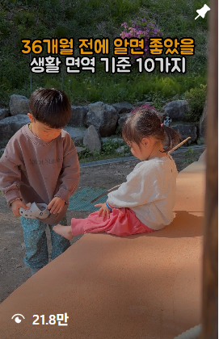
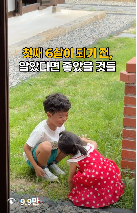
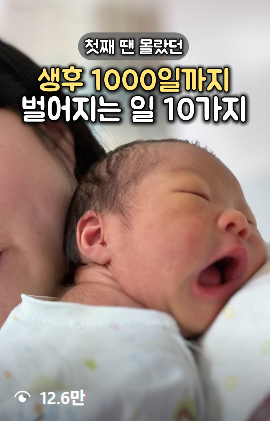

클로드 코드로 알고리즘이 좋아하는 콘텐츠 만들기 — 스킬 파일 + 링크 한 줄
- 1주차에 손으로 한 '알고리즘 → 소재 → 기획'을 클로드 코드에게 시킨다
- 세팅 3가지: 데스크톱 앱 Code 탭 · Apify 연결 · 스킬 파일
- 내 계정을 가르치고 → 터진 영상을 찾고 → 5칸으로 뜯고 → 내 공구 콘텐츠로 각색
- 함량·가격·후기는 AI가 채우지 않는다. 비워 두고 내가 채운다
세팅 3가지 → 스킬 파일 넣고 한 줄 → 내 계정만 답하기. 클로드가 내 타깃에게 터진 영상을 찾고, 영상과 카드뉴스를 칸별로 뜯어서 내 공구 대본과 원고로 바꿔 폴더에 쌓아줘요.
왜 클로드 코드로 하나요? (1주차에서 이어서)
1주차에는 알고리즘이 내 계정을 어떻게 읽는지 → 어디서 소재를 가져오는지 → 어떻게 기획하는지를 손으로 했어요. 방법은 맞는데, 레퍼런스 하나 뜯는 데 30분씩 걸리죠.
2주차는 그 순서를 그대로 클로드 코드에게 시켜요. 기준은 하나예요. 조회수가 아니라 "내 공구로 이어지는가."
| 1주차 · 손으로 | 2주차 · 클로드 코드로 |
|---|---|
| 세 탭 루틴, 계정 진단 | 내 게시물 60개를 받아 주제별 조회 중앙값으로 진단 (STEP 1) |
| 검색으로 재료 모으기 | 이름란 키워드로 꼬리 물기 검색, 계정 평균 대비 3배 이상만 (STEP 2) |
| 잘된 영상 vs 안 된 영상 | 영상·자막·댓글을 받아 5칸으로 분석 (STEP 3·4) |
| 믹싱 · 훅갈이 | 칸은 그대로, 내용만 내 계정·제품 파일로 바꿔 끼우기 (STEP 3·4) |
꿀팁: AI에게 맡기기 전에 레퍼런스 3개는 직접 손으로 뜯어보세요. 1주차에서 한 것처럼요. 그래야 클로드 결과가 맞는지 보이고, 스킬을 내 방식대로 고칠 수 있어요.
시작 전 체크
30초세팅 ① 데스크톱 앱 Code 탭 + 공구 폴더
2분클로드가 내 컴퓨터의 폴더 하나를 작업실로 쓰게 해 주는 곳이에요.
claude.ai/download 에서 내 컴퓨터에 맞는 앱을 받아 설치하고, 쓰던 Claude 계정으로 로그인하세요.
폴더 이름은 레인보우약사_오메가3공구처럼 계정_제품으로. 폴더 하나 = 공구 하나예요. 다음 공구는 새 폴더로 시작해요.
앱 위쪽의 Code 탭을 누르고, 방금 만든 폴더를 작업 폴더로 고르세요.
화면 구성은 앱 버전에 따라 조금 다를 수 있어요.
세팅 ② Apify 연결
3분클로드는 인스타 영상을 직접 못 열어요. Apify를 연결하면 링크만 줘도 영상·자막·캡션·댓글·조회수를 받아 와요.
apify.com 에서 구글 계정으로 가입하세요. 무료 플랜으로 시작해요.
왼쪽 아래 Settings → API & Integrations → Personal API token 옆 복사 버튼.
맥은 터미널, 윈도우는 PowerShell을 열고 아래 문장에서 내토큰 자리에 복사한 토큰을 넣어 실행해요.
터미널이 낯설면 FAQ의 "터미널 없이 연결하기"를 보세요.
데스크톱 앱 Code 탭을 다시 열고 입력창에 /mcp 를 치면 apify가 연결됨으로 보여요.
토큰은 비밀번호와 같아요. 캡처, 단톡방, md 파일 어디에도 남기지 마세요. 실수로 공유했다면 Apify 설정에서 바로 새 토큰으로 바꾸세요.
세팅 ③ 스킬 파일 받기
30초스킬 파일은 클로드에게 주는 '일하는 순서와 규칙'이에요. 이 페이지의 STEP 1~5가 전부 들어 있어요.
압축을 풀면 SKILL.md 하나가 나와요. STEP 1에서 이 파일을 대화창에 끌어다 놓아요.
공구 콘텐츠가 사고 안 나려면 — 5가지 규칙
"AI가 써 주면 그대로 올려도 되나요?" → 아니요. 클로드는 그럴듯한 숫자와 후기를 지어낼 수 있고, 건강기능식품 광고 규정은 약사 계정에 더 엄격하게 적용돼요.
이 규칙은 스킬 파일 안에 전부 들어 있어요. 따로 말 안 해도 지켜요. 단, 클로드의 광고 규정 검수는 1차 걸러내기예요. 올리기 전 마지막 확인은 내가 해요.
한 줄로 시작하기 — 내 계정 가르치기
PART 1에서 만든 폴더예요.
PART 3에서 받은 zip을 풀고, 안에 있는 SKILL.md를 끌어다 놓아요.
그러면 클로드가 스킬을 저장하고 먼저 5가지를 물어봐요.
상품만 답해도 돼요. 나머지는 클로드가 [확인 필요]로 두고 끝에 채울 것 목록을 줘요. 레인보우약사는 이렇게 답했어요.
클로드가 폴더를 이렇게 만들어요
products/ 폴더에 상세페이지 캡처와 실제 후기를 넣어 주세요. 함량·구성·가격·후기는 클로드가 지어내면 안 되는 부분이에요. 넣어 둔 만큼 STEP 3·4 각색이 정확해져요.
첫 번째 일: 내 계정 진단
클로드가 게시물을 받아 주제별로 나누고, 알고리즘이 내 계정을 어떤 주제로 읽고 있는지 표로 줘요. 레인보우약사의 실제 결과예요.
| 주제 | 조회 중앙값 · 최고 |
|---|---|
| 수면 | 5,020 · 최고 27,589 |
| 마그네슘 | 3,995 · 최고 97,486 |
| 탈모·모발 | 2,752 · 최고 47,456 |
| 약 상식(약국 질문) | 2,556 · 최고 56,997 |
| 오메가3 | 1,612 · 최고 2,417 |
| 아이·육아 (공구 타깃) | 858 · 계정 전체 중앙값 2,168의 절반 이하 |
모인 사람(성인 건강)과 살 사람(육아맘)이 달라요. 그래서 STEP 2에서는 육아맘에게 터진 영상을 찾아요. 1주차의 세 탭 루틴도 계속 병행해요.
출처: 레인보우약사 공개 게시물 59개(2026-07-10~10-06). 캡션 앞부분 키워드로 분류.
다음부터는 스킬이 저장돼 있으니 공구 폴더를 열고 아래 한 마디면 똑같이 시작돼요.
터진 영상 찾기 — 키워드 꼬리 물기
원리: 이름란 = 엄마들이 실제로 검색하는 말
잘하는 계정은 이름란에 키워드를 붙여둬요. 인스타 검색이 이 이름란을 보고 계정을 찾아주거든요. 그래서 잘하는 계정의 이름란을 따라가면 몰랐던 키워드와 계정이 줄줄이 나와요. 1주차 3단계에서 손으로 한 바로 그 방법이에요.
누구를 분석할지 고르기 — 3가지 기준
찾은 영상을 전부 분석하진 않아요. 클로드가 이 기준으로 줄을 세워요.
| 기준 | 이유 |
|---|---|
| ① 계정 평균 대비 3배 이상 | 팔로워 많은 계정이라 나온 숫자가 아니라, 그 영상이 잘해서 나온 숫자 |
| ② 내 타깃이 보는 계정 | 육아맘이 보는 계정에서 터진 영상이어야 첫 200~500명이 엄마들이 돼요 |
| ③ 형식만 빌려도 내 이야기가 들어가는가 | 얼굴·장소·출연자 빨이면 빌릴 수 없어요. 훅·구성·장치가 이유여야 해요 |
① 계정 평균 대비 배수 계산법 그 영상 조회 ÷ 같은 계정 최근 릴스 평균. 클로드가 계정 게시물을 받아 계산해요. 예를 들어 평균 2만인 계정에서 21.8만이 나왔다면 약 11배, 확실한 후보예요.
다 찾으면 클로드가 표로 정리하고 "이 10개 분석할까요?" 하고 물어봐요. 빼고 싶은 것만 말하고, 괜찮으면 아래처럼 답하세요.
이 승인 단계가 중요해요. 성인 다이어트 영상처럼 엉뚱한 타깃이 섞였을 때 여기서 걸러요. Apify 크레딧도 아껴요.
이 강의에서 실제로 고른 레퍼런스 — 1주차 실전에 쓴 육아 릴스 3편
레인보우약사 오메가3 공구 D-4 유입 릴스를 만들 때 실제로 쓴 레퍼런스예요. 서로 다른 계정인데 잘된 이유가 같았어요.


"첫째 6살이 되기 전, 알았다면 좋았을 것들"

"첫째 땐 몰랐던 생후 1000일까지 벌어지는 일 10가지"
공통 요소: "아이가 ○살 되기 전" + "알았다면 좋았을" + N가지. 엄마의 후회와 시기 불안을 건드려요. 세 편 모두 약사도, 제품도 안 나오는데 형식은 그대로 빌릴 수 있어요. 기준 ③을 통과한 이유예요.
영상 하나에서 보는 5칸 — 스크립트 분석과 각색
- 1구성몇 초에 무엇이 나오는지, 컷 수, 화자, 길이
- 2훅첫 문장과 화면 글자. 무엇을 묻거나 건드리는지
- 3초반 3초화면·소리·자막이 각각 무엇을 하는지
- 4영상 지속 장치포맷 예고, 리스트 카운트, 화자 전환, 웃음, 고정 타이틀
- 5마무리·반응CTA, 댓글에 나온 수요와 의심
클로드가 Apify로 영상 원본, 자막(음성 받아쓰기), 캡션, 댓글을 받아 칸별로 채우고 analysis/에 저장해요.
실제로 이 영상은 Apify가 못 받아와요. 강의 준비 중 돌려 보니 "Restricted access… The post is age-restricted"(연령 제한 게시물)라는 답이 왔어요. 이럴 때 클로드는 지어내지 않고 막혔다고 알려준 뒤 캡처를 달라고 해요. 장면이 바뀔 때마다 캡처하고(자막이 보이게), 캡션과 댓글도 캡처해서 references/DX_6kC4JfUq/에 넣으면 같은 5칸으로 분석해요.
정확도를 올리는 규칙 2가지
- 본 것 먼저, 생각은 마지막. 해석부터 하면 "이 약사님 말을 잘해서 터졌네"로 끝나요. 초 단위로 본 것을 다 적은 뒤 해석해요.
- 본 것과 생각을 표시로 구분. 한 달 뒤에 봐도 AI의 짐작을 사실로 착각하지 않아요.
| 표시 | 뜻 | 예시 (레퍼런스 A) |
|---|---|---|
| [관찰] | 화면 사실 | 야외에서 노는 두 아이 위에 노란·흰 2줄 자막 "36개월 전에 알면 좋았을 / 생활 면역 기준 10가지" |
| [실측] | 숫자 | 조회 21.8만 (B 9.9만 · C 12.6만) |
| [추론] | 해석 | '36개월'이라는 숫자가 그 또래 엄마를 골라 멈추게 한다 |
| [가설] | 미검증 | 10가지를 다시 보려고 저장이 많았을 것 (원본 인사이트로 확인 필요) |
실제 분석 결과 — 레퍼런스 A·B·C 공통 칸
원본 영상을 못 받은 상태에서 썸네일 캡처 3장만으로 채운 결과예요. 못 본 칸은 비워 둔 게 정상이에요.
| ① | 구성 | [관찰]세 편 모두 아이 일상 장면 위에 큰 자막 2줄. 엄마 얼굴·설명 화면 없음 [추론]장면마다 N가지를 한 줄씩 넘기는 리스트 구성 [확인 필요]길이·컷 수 |
| ② | 훅 | [관찰]A "36개월 전에 알면 좋았을" · B "첫째 6살이 되기 전, 알았다면 좋았을 것들" · C "첫째 땐 몰랐던 생후 1000일까지" [추론]시기 + 후회. 그 시기 엄마가 "내 얘기"로 멈춘다 |
| ③ | 초반 3초 | [관찰]노는 아이, 잠든 신생아 장면 + 숫자만 노란색 강조(36개월 · 6살 · 1000일) [추론]정보·광고가 아니라 육아 브이로그처럼 보여 넘기지 않는다 |
| ④ | 지속 장치 | [관찰]제목에 개수 "10가지"(A·C) [추론]개수 예고가 카운트다운이 돼 끝까지 보게 한다 [가설]장면마다 번호 자막 |
| ⑤ | 마무리·반응 | [확인 필요]마지막 장면·CTA·댓글은 원본을 못 받아 비움 → 캡처를 넣으면 채워요 |
왜 터졌나 한 줄: "○살 되기 전 + 알았다면 좋았을 + N가지"가 시기 불안과 후회를 건드리고, 개수가 끝까지 보게 한다 [추론]. 그대로 가져오면 안 되는 것: 아이 사진·영상 원본, 문장 그대로 베끼기.
각색 — 칸은 그대로, 내용만 내 것으로
분석이 끝나면 칸(형식)은 그대로 두고 내용만 CLAUDE.md와 products/로 바꿔 끼워요. 비어 있던 ⑤ 칸은 내 계정 규칙(댓글 키워드)으로 채워요.
| 시간 | 화면 | 대사 · 자막 | 칸 |
|---|---|---|---|
| 0~4초 | 아이가 노는 장면 + 노란 숫자 자막 | "약사 엄마인 저도 이건 5년 전(60개월 전)에 알았으면 좋았겠다 싶었어요." | ② 훅 · ③ 3초 |
| 4~17초 | 아이 식사 장면 | "아이 뇌는 만 5세, 60개월쯤이면 어른 뇌의 90%까지 자라요. 그 뇌를 만드는 재료가 '좋은 기름', DHA예요." | ① 공감·근거 |
| 17~20초 | 자막 "7가지" | "그래서 약사 엄마가 60개월 전에 알았으면 좋았을 7가지." | ④ 개수 예고 |
| 20~45초 | 장면마다 번호 자막 ①~⑦ | ① 생선은 흰살보다 등푸른 생선부터 ② 견과류·들기름만 믿지 않아요 ③ 과자·튀김 기름으로 배 채우지 않아요 … ⑦ 매일 꾸준히가 기준이에요 | ④ 리스트 카운트 |
| 45~50초 | 자막 "댓글에 DHA" | "'DHA' 댓글 남겨주시면 서울대 약사맘이 정리한 오메가3 정리본 전달드릴게요." | ⑤ CTA |
1주차 레인보우약사 실전에 쓴 각색 대본 A예요. 레퍼런스 A의 "○개월 전에 알면 좋았을 + N가지"를 빌리고, 내용은 아이 두뇌 영양(DHA)으로 바꿨어요. 제품은 한 번도 안 나와요.
칸별로 확인해요. 훅에 시기와 후회가 있는가, 20초 안에 몇 가지를 볼지 예고했는가, 마지막에 댓글 키워드가 있는가. 하나라도 비면 그 칸만 다시 시켜요.
카드뉴스 하나에서 보는 칸 — 분석과 각색
릴스가 사람을 데려오면, 카드뉴스는 사게 만들어요. 특히 OPEN 카드뉴스는 상세페이지를 대신하니 레이아웃과 필수 요소를 빠짐없이 봐요.
| # | 보는 곳 | 무엇을 보나 |
|---|---|---|
| A | 레이아웃 | 몇 장인지, 비율(1080×1350), 장마다 맡은 역할, 큰 글자·작은 글자 위계, 색과 사진 배치 |
| B | 후킹 요소 | 커버에서 멈추게 하는 문장·숫자·질문, 2장으로 넘기게 하는 장치 |
| C | 필수 요소 5가지 | 아래 다섯 가지가 몇 번째 장에, 어떻게 들어갔는지. 빠진 것도 표시 |
OPEN 카드뉴스에 반드시 들어가야 하는 5가지
Before/After와 구매평은 광고 규정을 먼저 봐요. Before/After는 효과 비교가 아니라 생활 장면으로. 구매평은 맛·먹이기 편함·아이 반응처럼 효과를 약속하지 않는 후기를 고르고, 원문을 고치지 않아요.
캐러셀 이미지는 Apify로 받아도 인스타가 막아서 안 열릴 때가 있어요. 그러면 클로드가 알려 줘요. 장별 캡처를 references/에 넣어 주면 문구와 레이아웃까지 정확하게 봐요.
각색 — OPEN 카드뉴스 8장 원고
진한 테두리가 필수 요소예요. 8장 흐름은 @eunha__yak의 OPEN 카드뉴스에서 빌렸어요.
폴더에 이렇게 쌓여요
기획안 한 장을 열면
위쪽에 원본 칸 vs 바꾼 내용 대응표가 있고, 아래에 바로 쓸 수 있는 원고가 순서대로 들어 있어요.
공구 일정이 있으면 1주차 업로드 스케줄 자리에 맞춰 표시돼요. D-4 유입 릴스(STEP 3) → D-Day OPEN 카드뉴스(STEP 4) → 마감 D-1 리마인드. 리마인드는 OPEN 카드뉴스 7·8장을 "곧 마감"으로 바꿔 달라고 하면 돼요.
중간에 멈춰도 괜찮아요
클로드는 레퍼런스 하나를 파일로 다 쓰고 나서 다음으로 넘어가요. 중간에 멈춰도 끝난 분석은 폴더에 그대로 남아요. 클로드가 "몇 번째부터 남았어요"라고 알려 주면 다음에 이렇게 입력하세요.
막혔을 때(자주 나오는 문제)는 바로 아래 FAQ에 정리해 두었어요.
한눈에 정리
자주 나오는 문제
터미널 없이 Apify를 연결할 수 있나요?
공구 폴더 안에 .env라는 파일을 만들고 APIFY_TOKEN=내토큰 한 줄을 적어 두면 돼요. 스킬이 Apify 연결이 없을 때 이 파일의 토큰으로 직접 불러오도록 되어 있어요. 파일 만들기가 어렵다면 Code 탭에서 "공구 폴더에 .env 파일 만들어 줘, 토큰은 내가 직접 넣을게"라고 하고, 열린 파일에 토큰을 붙여 넣으세요.
/mcp에 apify가 안 보여요
데스크톱 앱을 완전히 종료했다가 다시 여세요. 그래도 없으면 터미널 문장에서 내토큰 자리가 실제 토큰으로 바뀌었는지, 앞뒤에 빈칸이 들어가지 않았는지 확인하세요. 위의 .env 방법으로 써도 돼요.
Apify 비용이 나오나요?
무료 플랜 크레딧 안에서 시작할 수 있어요. 클로드가 수집 전에 예상 크레딧을 먼저 알려 주고, 이미 받은 건 다시 받지 않아요. STEP 2의 승인 단계에서 개수를 줄이면 더 아껴요.
카드뉴스 이미지를 못 읽는다고 해요
인스타가 이미지 다운로드를 막는 경우예요. 장별 캡처를 references/ 폴더에 넣고 "캡처로 다시 분석해줘"라고 하세요.
클로드가 숫자나 후기를 지어냈어요
"products/에 없는 숫자와 후기는 전부 [확인 필요]로 바꿔줘"라고 하세요. 그리고 products/ 폴더에 상세페이지와 실제 후기가 들어 있는지 확인하세요. 비어 있으면 클로드가 채울 근거가 없어요.
광고 규정 점검표를 믿고 올려도 되나요?
1차 걸러내기로만 쓰세요. 애매한 표현은 제조사나 건강기능식품 광고 자율심의로 확인하는 게 안전해요.
claude.ai 웹에서 하면 안 되나요?
스킬 업로드와 분석은 웹에서도 돼요. 다만 폴더에 파일이 쌓이고, 멈췄다 이어서 하기는 데스크톱 앱 Code 탭이 훨씬 편해요.